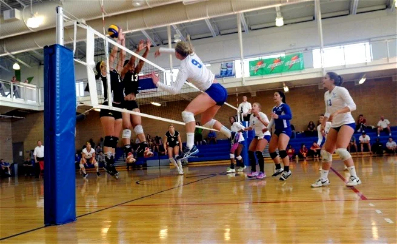
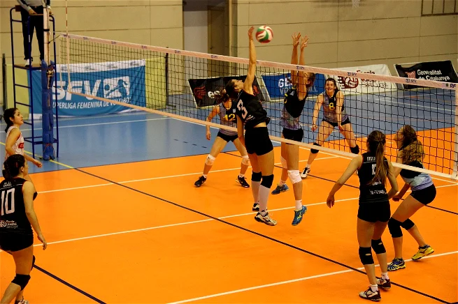
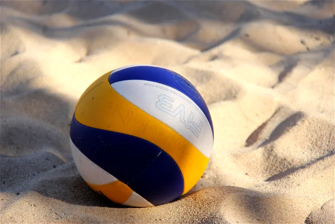
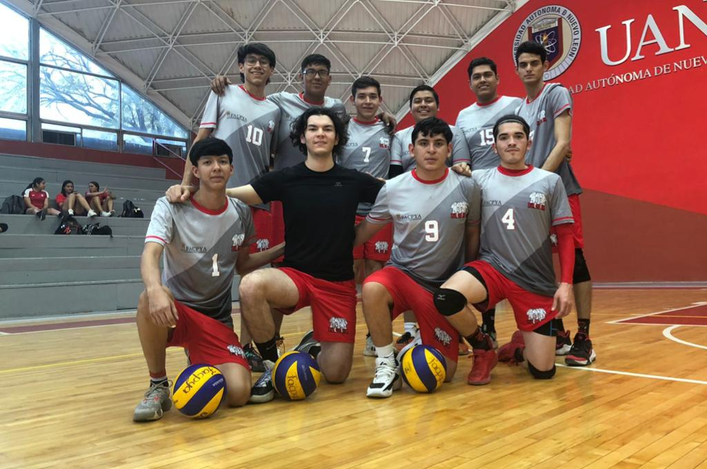

Voleibol
Breve descripción de la actividad deportiva
El voleibol (inicialmente bajo el nombre de mintonette) nació el 9 de febrero de 1895
en Estados Unidos, en Holyoke, Massachusetts. Su inventor fue William G. Morgan, un
director de educación física de la YMCA. Se trataba de un juego de interior por
equipos con semejanzas al tenis o al balonmano. Aunque próximo en su alumbramiento
al baloncesto por tiempo y espacio, se distancia claramente de éste en la rudeza, al
no existir contacto entre los/as jugadores/as.
El voleibol, balonvolea o simplemente voley, es un deporte donde dos equipos se
enfrentan sobre un terreno de juego liso separados por una red central, tratando de
pasar el balón por encima de la red hacia el suelo del campo contrario. El balón
puede ser tocado o impulsado con golpes limpios, pero no puede ser parado, sujetado,
retenido o acompañado. Cada equipo dispone de un número limitado de toques para
devolver el balón hacia el campo contrario (un máximo de tres). Habitualmente el
balón se golpea con manos y brazos, pero también con cualquier otra parte del
cuerpo. Una de las características más peculiares del voleibol es que los jugadores
y las jugadoras tienen que ir rotando sus posiciones a medida que van consiguiendo
puntos.
Objetivos
- Generar el entorno ideal para que a través de esta práctica deportiva el
alumnado logre evadirse de su día a día.
- Conocer y asimilar las normas del voleibol para su correcta práctica.
- Trabajar teórica y prácticamente los conceptos técnicos y tácticos básicos
necesarios para poder practicar esta modalidad deportiva.
Lugar en el que se realiza la actividad
En cualquier gimnasio con una cancha de 9x9 y el tipo de piso adecuado para el deporte.
Reglas del Voleibol

- El campo de juego o cancha es de forma rectangular y debe medir 18 m de largo po 9 m de ancho.
- La mitad del campo debe estar marcada por una línea sobre la cual se coloca la red o malla
divisoria. Esta línea divide la cancha en dos parte iguales que miden 9 m, y donde jugará cada
uno
de los equipos.
- La zona libre del campo debe medir 3 m en cada uno de sus cuatro lados, ya que ahí también se
realizan jugadas.
- Luego, década lado de la línea central debe estar marcada una línea que delimita la zona de
ataque y
que mide 3 m en cada lado de la cancha.
- La parte restante es la zona defensiva y donde se posicionan los zagueros y el líbero.
La red o malla

- La red o malla debe medir entre 9,5 o 10 m de largo y uno de ancho. La malla sobresale hacia las
líneas lateralescerca de 50 cm.
- Tiene dos bordes para poder identificar la parte superior e inferior de la malla.
- Sobre la banda superior de la red sobresalen a cada lado unas varillas o antenas de 80 cm cada
una, para demarcar la zona de juego. No deben ser tocadas ni por los jugadores ni por la pelota.
- Debe estar sujetada por dos postes a una altura de 2,24 en la categoría femenina, o de 2,43 en
la categoría masculina.
Balón

- Su exterior debe ser de un material sintético o cuero, acolchado y puede tener una combinación de
dos o tres colores.
- El balón o pelota debe tener una circunferencia entre 65 o 67 cm y un peso entre 260 o 280 g. Su
presión debe ser entre 0,3 o 0,325 kg/cm2.
Conoce al equipo Facpya (CONTADURIA)
